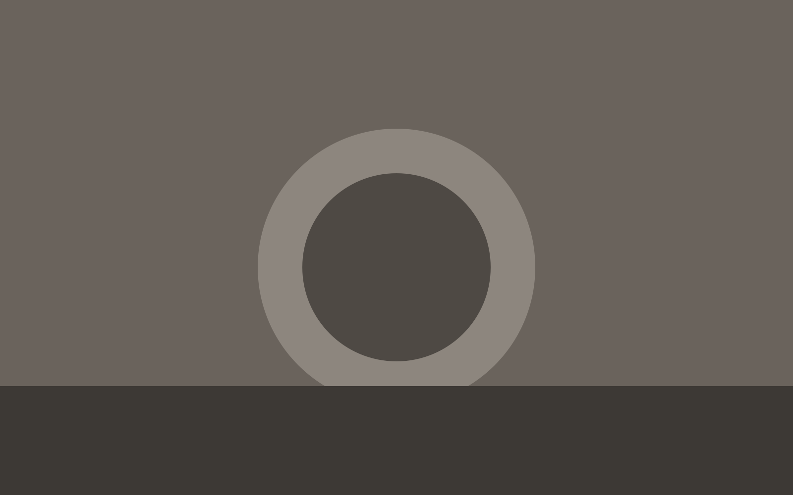
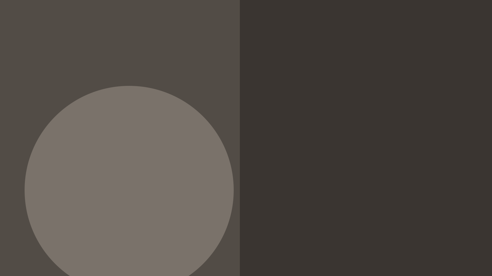
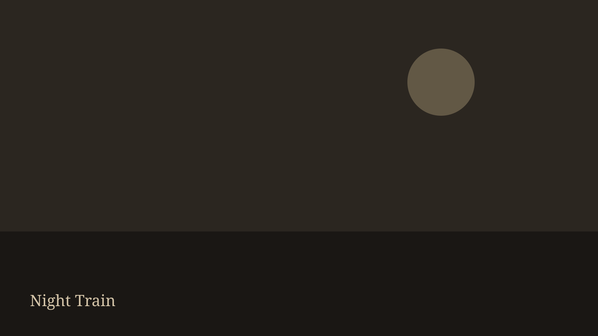

Participatory Performance & Installation, 2021
Sisyphus
- Role: Concept / Artist
- 2021

An interactive installation exploring environmental responsibility through a collective physical action. Participants pushed an accumulating sphere of waste — a shared, exhausting gesture that made the weight of discarded material visible in the body and in the room.

